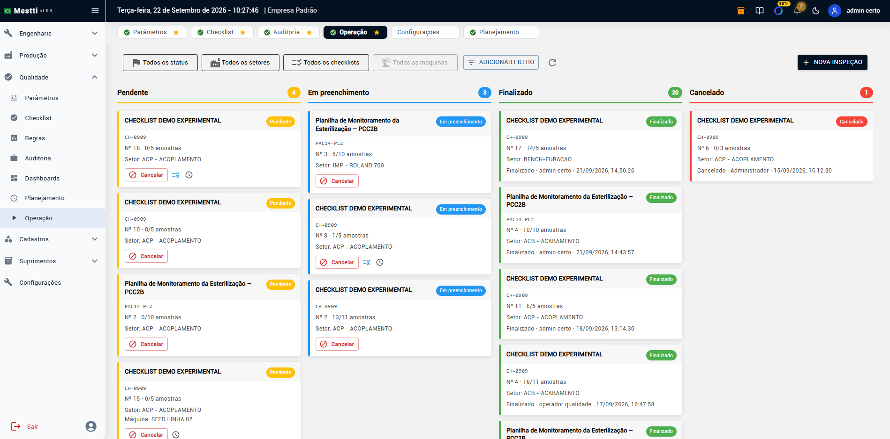

A Extrusora 02 concentra resultados fora da faixa na zona 1.
Qualidade Mestti
Seu padrão de qualidade, conectado à produção.
Crie checklists digitais, execute inspeções no chão de fábrica e acompanhe cada registro dentro do contexto real da operação.
Máquina, setor, responsável, ordem de produção, checklist e revisão: tudo conectado em um único histórico.
- Menos papel
- Mais rastreabilidade
- Mais controle sobre o processo

01 · Estruture
Transforme seus padrões de inspeção em checklists digitais.
Leve para a Mestti os controles que hoje estão em papel, planilhas ou formulários separados.
Crie checklists para cada processo, organize os pontos que precisam ser verificados e mantenha o padrão de inspeção disponível para toda a operação.
Padrão por processo
Cada checklist concentra o que precisa ser conferido, no mesmo lugar, para quem executa e para quem acompanha.
Revisão com histórico
O checklist pode evoluir conforme o processo muda, sem apagar as inspeções feitas nas revisões anteriores.
Do padrão da qualidade para a rotina da fábrica.
02 · Execute
A inspeção acontece onde a qualidade é produzida.
No chão de fábrica, o operador acessa as inspeções disponíveis e realiza o preenchimento pelo celular, tablet ou computador.
Durante a execução, é possível registrar valores, classificar o resultado da verificação e adicionar observações sobre o que foi encontrado.
Simples para quem executa
O operador encontra o checklist, inicia a inspeção e responde somente o que precisa ser verificado.
Salvar e retomar
O preenchimento pode ser salvo e retomado sem perder o trabalho realizado.
- Sem planilhas espalhadas.
- Sem formulários perdidos.
- Sem depender da memória para registrar depois.
03 · Contextualize
Um checklist sozinho mostra uma resposta. O contexto mostra o que aconteceu.
Na Mestti, a inspeção pode fazer parte da própria operação industrial.
Uma execução pode estar relacionada ao setor, máquina, responsável, checklist, revisão e, quando aplicável, à ordem de produção.
“A inspeção deu problema.”
“Qual inspeção apresentou o problema, em qual máquina, durante qual produção e quem realizou a verificação?”
É qualidade conectada ao processo produtivo.
04 · Acompanhe
Saiba o que está acontecendo sem procurar papel por papel.
Acompanhe as inspeções realizadas e encontre rapidamente o que precisa ser analisado.
Consulte execuções por checklist, setor, máquina, responsável, revisão e status.
Visão da operação
Veja o que está em andamento, o que já foi concluído e os registros que exigem atenção.
A informação deixa de ficar espalhada
A gestão passa a ter uma visão centralizada das inspeções realizadas pela operação.
05 · Rastreie
Cada inspeção deixa um histórico.
Quem realizou, quando realizou, qual checklist foi utilizado, qual revisão estava vigente, onde a inspeção aconteceu, quais valores foram registrados, qual foi o resultado e quais observações foram feitas.
A informação permanece associada à execução para consultas futuras.
Mais rastreabilidade para auditorias, investigação de problemas e melhoria contínua.
06 · Analise
Encontre padrões antes que eles se tornem problemas maiores.
Com os registros organizados digitalmente, a gestão consegue consultar o histórico das inspeções e identificar recorrências.
A inspeção deixa de ser apenas um registro e passa a gerar informação para a tomada de decisão.
Não é apenas um checklist
Qualidade dentro do mesmo ecossistema da sua produção.
A Mestti conecta informações que normalmente ficam separadas. Enquanto ferramentas tradicionais registram apenas o preenchimento do formulário, a Mestti aproxima a qualidade dos dados reais da operação.
Produção
Máquina
Operador
Ordem de produção
Inspeção
Histórico
A gestão consegue entender não apenas o que aconteceu, mas também em qual contexto aconteceu.
Onde usar?
Um módulo para diferentes controles da indústria.
Inspeção de recebimento
Padronize a conferência de matérias-primas e materiais recebidos.
Inspeção de processo
Realize verificações durante as diferentes etapas da produção.
Liberação de máquina ou processo
Confirme os pontos necessários antes do início da operação.
Inspeção de produto final
Registre critérios e resultados antes da liberação do produto.
Auditorias internas
Digitalize verificações periódicas realizadas pela equipe da qualidade.
5S e organização
Crie rotinas de inspeção para áreas, máquinas e setores.
Limpeza e boas práticas
Padronize verificações e mantenha o histórico das execuções.
Do papel para um processo rastreável
Comece com o processo que você já possui.
Você não precisa reinventar seu sistema de qualidade para começar. Pegamos o checklist que hoje existe no papel, na planilha ou em outro formulário e transformamos a rotina em um processo digital dentro da Mestti.
Digitalize
Transforme os controles atuais em checklists dentro da plataforma.
Execute
Disponibilize as inspeções para quem realmente realiza a atividade.
Acompanhe
Centralize as execuções e os resultados da operação.
Melhore
Use o histórico para identificar desvios e evoluir o processo.
Qualidade mais perto da produção
Digitalize suas inspeções e transforme registros em informação para a operação.
Saia do papel e tenha um histórico organizado sobre como, onde e quando cada inspeção foi realizada.
Mestti. Transformando dados da fábrica em decisões.
Sem compromisso. Começamos pelo processo que você já possui.